01 · Le vocabulaire de l’interface — m205-s1-a1
Associer chaque élément de l’interface Word à son rôle.
Barre d’outils Accès rapide
الصورة تعرض الشريط كله، ولا تميّز شريط الوصول السريع الصغير.

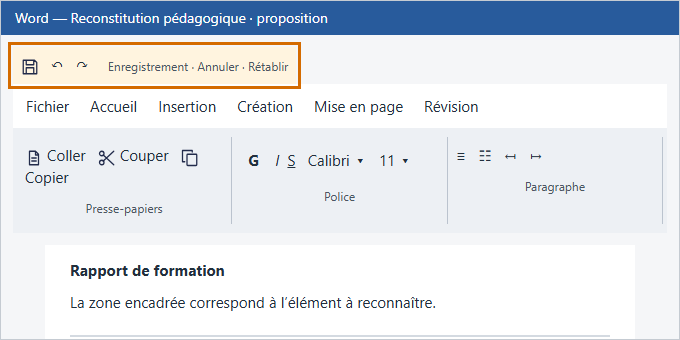
القديم مأخوذ من الربط الحالي. البديل إعادة بناء تعليمية للواجهة، وليس لقطة أصلية من Microsoft Office. لم يُدمج أي بديل في المنصة.
Associer chaque élément de l’interface Word à son rôle.
Barre d’outils Accès rapide
الصورة تعرض الشريط كله، ولا تميّز شريط الوصول السريع الصغير.

Associer chaque élément de l’interface Word à son rôle.
Ruban
الصورة المشتركة نفسها تُستعمل للشريط وللتبويب والوصول السريع؛ لا تبيّن الفرق.
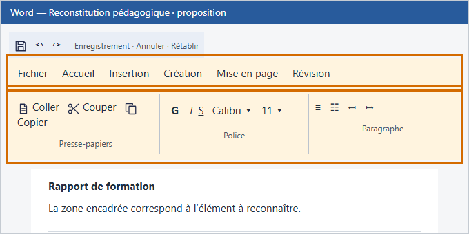
Associer chaque élément de l’interface Word à son rôle.
Onglet
المطلوب تبويب واحد، بينما الصورة تعرض واجهة عامة دون تحديده.

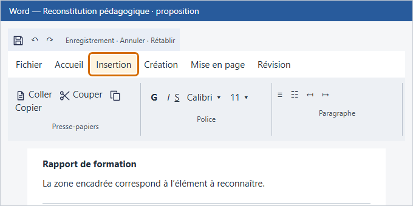
Associer chaque élément de l’interface Word à son rôle.
Groupe
أيقونة أسطر نص لا تعبّر عن مجموعة أوامر داخل الشريط.

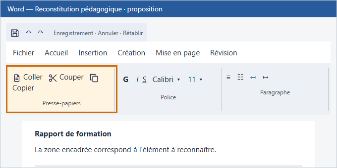
Associer chaque élément de l’interface Word à son rôle.
Commande
أيقونة نص عامة لا تُظهر زر تنفيذ أمر.

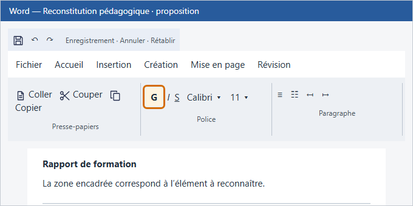
Associer chaque élément de l’interface Word à son rôle.
Onglet personnalisé
الصورة لا تميّز تبويباً أنشأه المستخدم عن تبويبات Word الأصلية.

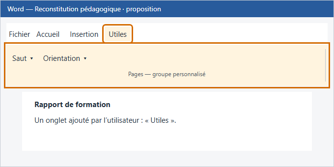
Choisir le bon type de saut pour chaque besoin de mise en page.
Passer uniquement l’annexe en Paysage
رمز نص عام لا يوضح اختلاف اتجاه الملحق عن بقية الوثيقة.
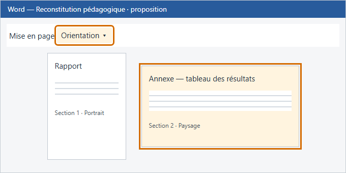
Associer chaque notion à sa définition.
Thème
الصورة تُظهر أنماط عناوين، بينما الثيم يجمع ألوان الوثيقة وخطوطها.
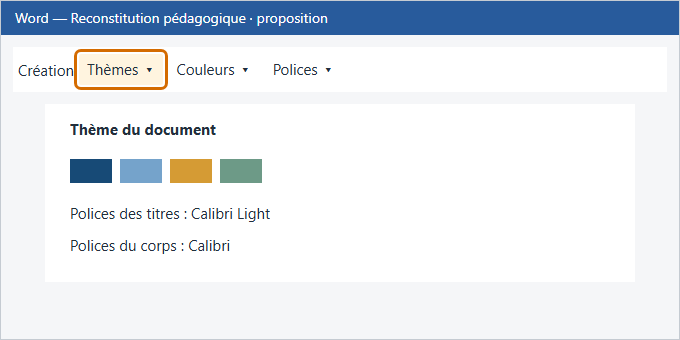
Associer chaque notion à sa définition.
Modèle (.dotx)
الصورة نفسها المستعملة للأنماط لا توضّح ملف قالب قابل لإعادة الاستخدام.

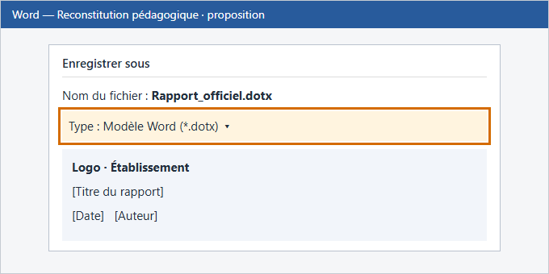
Associer chaque outil à son effet.
Mode Plan
رمز أسطر عام لا يوضح مستويات العناوين في وضع المخطط.

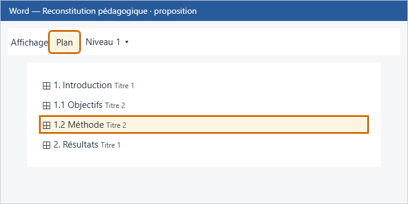
Associer chaque option à son effet.
Case à cocher
العلامة الحالية نص عام؛ المطلوب عنصر نموذج يمكن تحديده.

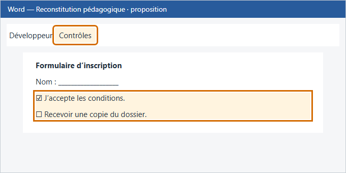
Classer chaque outil selon son rôle.
Voir qui a supprimé une phrase
سلة المهملات تعني الحذف؛ السؤال عن معرفة صاحب التعديل عبر تعقب التغييرات.
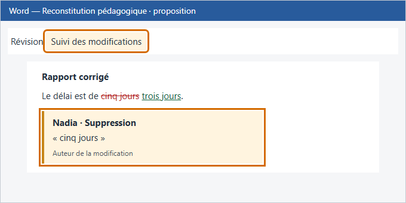
Classer chaque outil selon son rôle.
Ajouter une remarque dans la marge
رمز محاذاة الفقرة نتج عن كلمة marge، بينما المطلوب تعليق في الهامش.
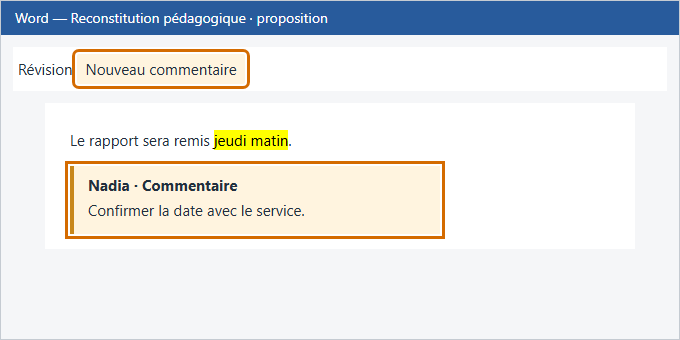
Associer chaque outil à son effet.
Poignée de recopie
رمز نسخ الأوراق لا يبيّن المربع الصغير في زاوية الخلية.
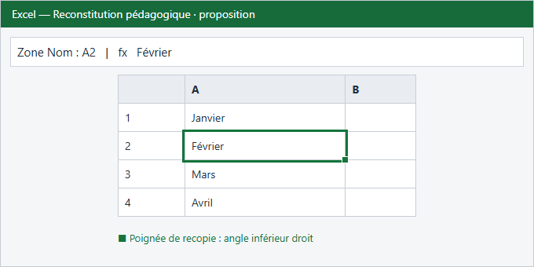
Associer chaque outil à son effet.
Mise en forme conditionnelle
رمز الشيفرة نتج عن كلمة conditionnelle؛ المطلوب قواعد تنسيق الخلايا.
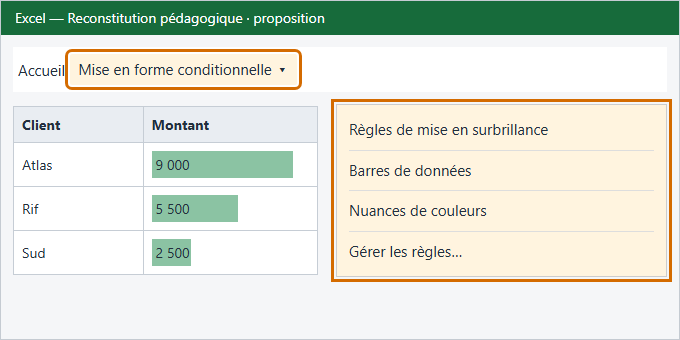
Associer chaque outil à son effet.
Liste personnalisée
صورة الفرز لا تشرح قائمة قيم يُعاد استعمالها في التعبئة.
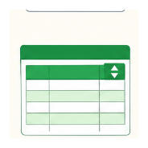
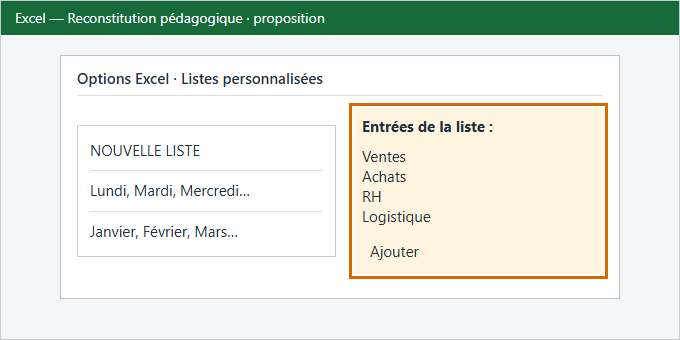
Classer chaque élément selon sa nature.
Bouton texte « Aller à la feuille Ventes »
صورة خلايا عادية لا تعبّر عن رابط ينتقل إلى ورقة أخرى.

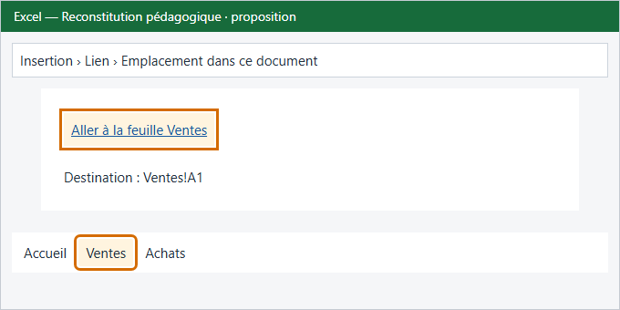
Choisir le type de graphique selon l’objectif.
Montrer la progression du nombre de clients sur 5 ans
رمز السلسلة نتج عن وجود lien داخل clients؛ المطلوب اتجاه زمني للبيانات.

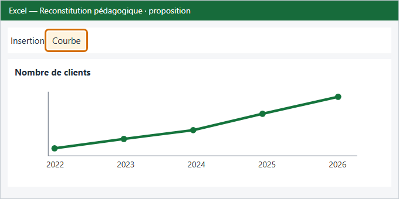
Choisir l’opération qui répond à chaque demande.
Classer les clients du plus gros au plus petit montant
رمز الرابط نتج عن clients، بينما المطلوب فرز تنازلي للمبالغ.
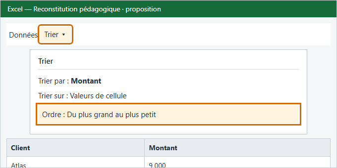
Choisir l’opération qui répond à chaque demande.
N’afficher que les clients actifs
رمز الرابط لا يعبّر عن إظهار صفوف تستوفي شرطاً وإخفاء الباقي.

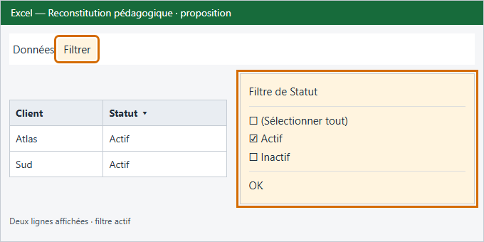
Choisir l’opération qui répond à chaque demande.
Mettre les mois en lignes au lieu de colonnes
صورة أعمدة نص Word لا تعبّر عن تبديل الصفوف والأعمدة في Excel.
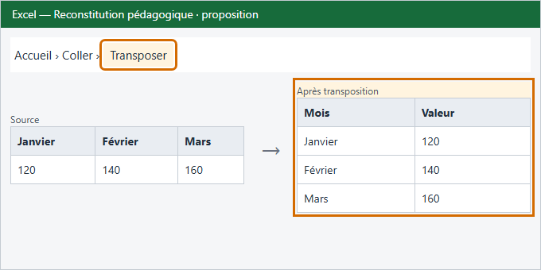
Associer chaque notion à sa définition.
Consolidation par position
صورة جدول محوري مشتركة لا تشرح جمع نطاقات متطابقة الموضع.
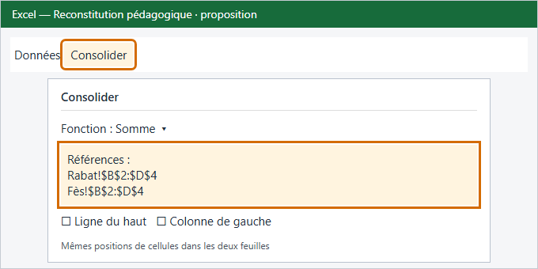
Pour « ventes par ville et année, filtrées par commercial », placer chaque champ dans la bonne zone.
Ville
رمز نص عام لا يوضح مكان حقل Ville في قائمة حقول الجدول المحوري.

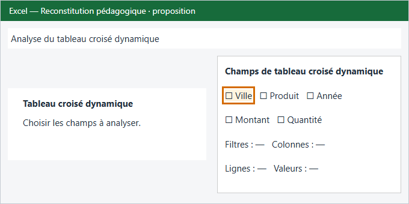
Associer chaque outil à son rôle.
Message de saisie
صورة البريد نتجت عن message؛ المطلوب رسالة إرشاد تظهر عند تحديد خلية.
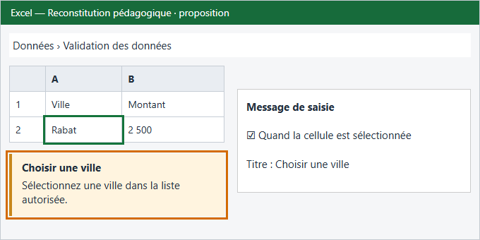
Associer chaque outil à son rôle.
Protéger la feuille
صورة الخلايا العادية لا توضّح قفل الخلايا وخيارات حماية الورقة.
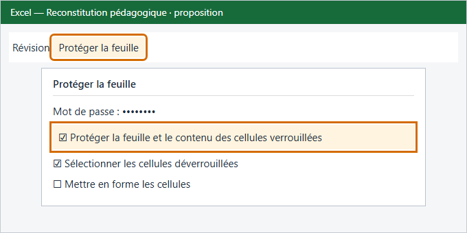
Associer chaque notion à sa définition.
Masque des diapositives
معاينة تخطيطات بسيطة لا تميّز القناع الرئيسي عن تخطيط تابع له.

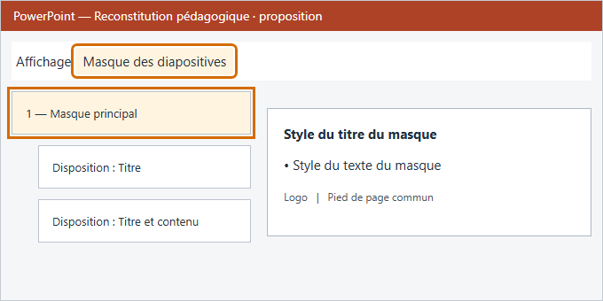
Classer chaque effet.
Effet « Fondu » au passage d’une diapositive à la suivante
صورة التخطيطات اختيرت بسبب كلمة diapositive؛ السؤال عن الانتقال بين شريحتين.
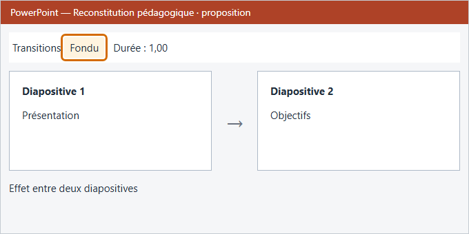
Classer chaque effet.
Bouton « Retour au menu » qui renvoie à la diapositive 2
صورة تخطيطات الشرائح لا تُظهر زر تنقل ووجهته.

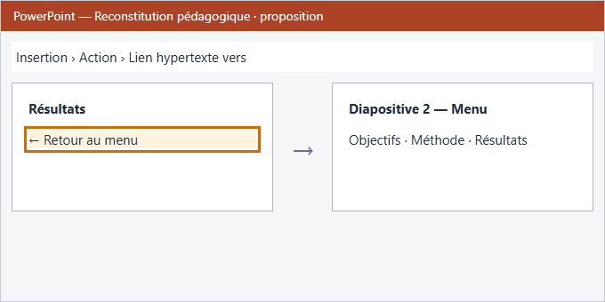
Associer chaque fonction à son rôle.
Différer la livraison
رمز تشغيل الفيديو نتج عن son داخل livraison؛ المطلوب جدولة إرسال بريد.
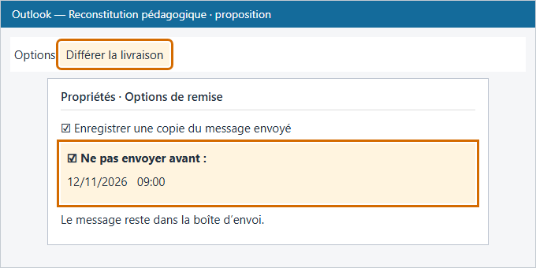
Associer chaque fonction à son rôle.
Règle
صورة المجلدات وحدها لا تبيّن الشرط والإجراء اللذين يكوّنان قاعدة بريد.
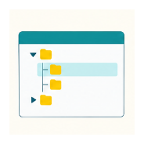
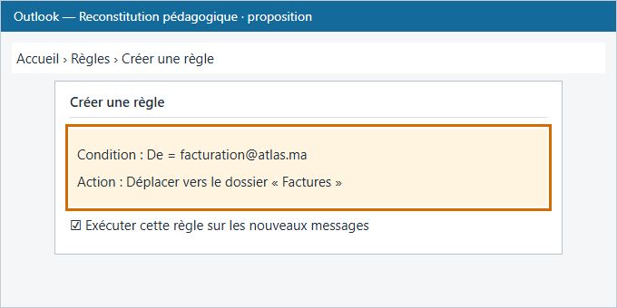
Associer chaque élément Outlook à son usage.
Groupe de contacts
صورة جهة اتصال واحدة لا تميّز مجموعة من عدة أعضاء.
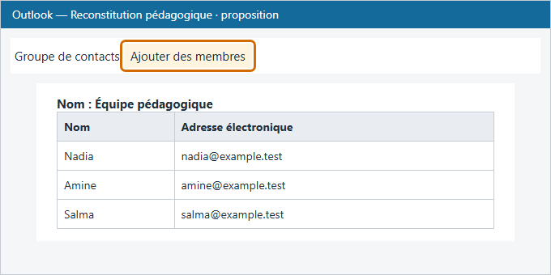
Associer chaque élément Outlook à son usage.
Modèle de message (.oft)
صورة صندوق بريد عامة لا تميّز ملف قالب رسالة محفوظاً لإعادة الاستخدام.
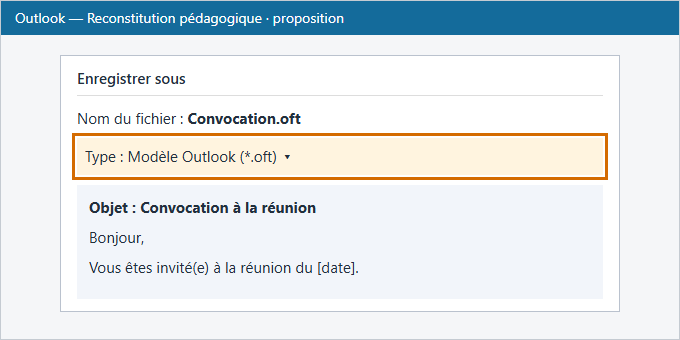